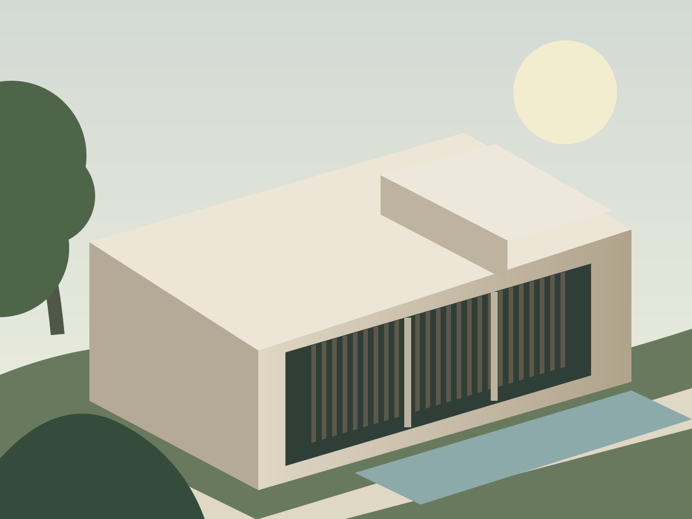
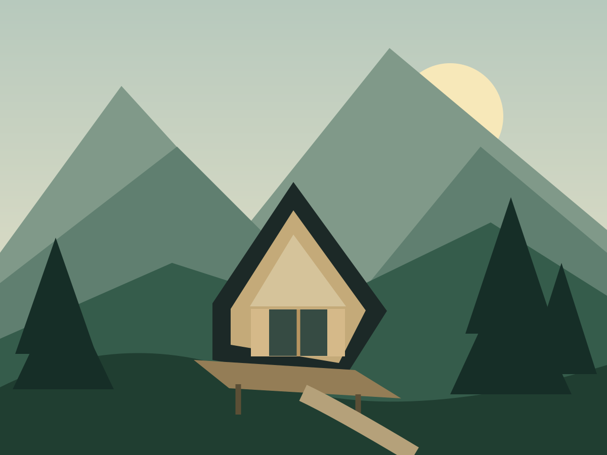

Seu negócio.
Uma presença
com propósito.
Interfaces responsivas, navegação clara e atenção aos detalhes que fazem a diferença.
Conheça o trabalho ↗Cinco marcas imaginadas. Cinco experiências para explorar. Design, conteúdo e desenvolvimento conectados em páginas que convidam à ação.
↓
forma®Arquitetura para viver.↗Projetos que contam histórias.
Filtros e estudos interativos.
 aurora ✳Menos passos. Mais cuidado.↗
aurora ✳Menos passos. Mais cuidado.↗Uma marca que respira.
Descoberta de produtos e rituais.

serra △O mundo espera. Você pode pausar.↗Um convite para desacelerar.
Simulador de estadia e cabanas.
Clareza para o próximo passo.
Quadro funcional e planos dinâmicos.
 brasa®A noite pede uma boa pizza.↗
brasa®A noite pede uma boa pizza.↗Uma experiência que dá vontade.
Cardápio com filtros e carrinho.
Interfaces responsivas, navegação clara e atenção aos detalhes que fazem a diferença.
Conheça o trabalho ↗Sou Gabriel Saturnino, desenvolvedor fullstack. Esta coleção demonstra como transformo diferentes propostas de negócio em experiências digitais próprias.
Cada marca tem linguagem, ritmo e composição próprios.
Botões, filtros e simuladores com comportamento real na interface.
Estrutura semântica, navegação por teclado e respeito a movimento reduzido.
HTML, CSS e JavaScript. Ilustrações próprias e sem dependências externas.
Todas as marcas, produtos, preços e projetos são fictícios. Não são trabalhos realizados para clientes reais. As interações são locais e não enviam dados.